Kildesortering er viktig for å begrense hvor mye avfallet vårt
påvirker miljøet. I dette spillet skal vi kildesortere og samtidig
lære en hel del om meldinger i programmering.
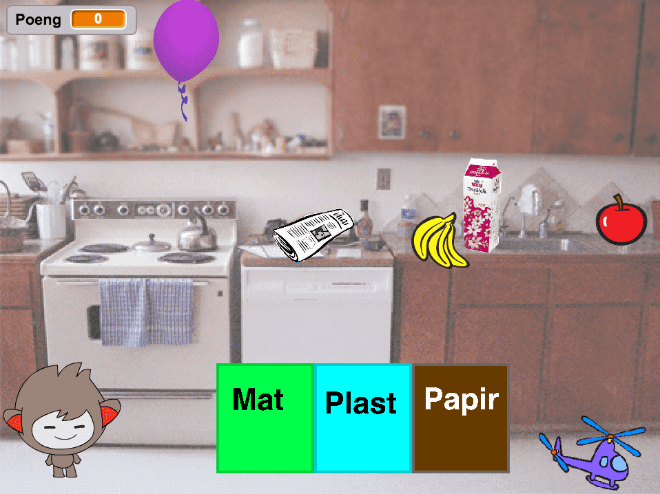
Steg 1: Legg til Ronny og søppelet
Vi starter spillet med å introdusere Ronny, som er vår hjelper underveis,
og søppelet som vi skal kaste.
Sjekkliste
Start et nytt prosjekt. Legg til en ny figur, enten fra biblioteket,
slik vi har gjort, eller tegn din helt egen hjelper! Vi valgte figuren
nano, da han har flere drakter som vi tenker å bruke i utfordrings-delene.
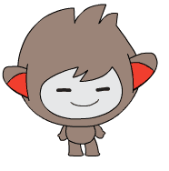
Målet med spillet er å få all søppelet i bøttene de hører til. Hver gang
vi fjerner en søppel-figur så får vi et poeng. Målet vårt er å få så mange
poeng som det er søppel-biter.
I første omgang vet ikke Ronny om noe av søppelet, så vi lar Ronny sette
både poeng og mål til null. For å legge til variabler trykker vi på
Data-kategorien og trykk på Lag en Variabel.
når grønt flagg klikkes
sett [Mål v] til [0]
sett [Poeng v] til [0]
Legg til seks figurer som representerer søppel. Her kan du igjen velge
eksisterende figurer fra biblioteket, tegne dine egne, eller finne
noen bilder på nettet du syns passer. Selv valgte vi noen bananer, et eple,
en ballong, et hellikopter, en melkekartong, og en avis.
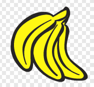
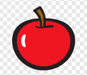
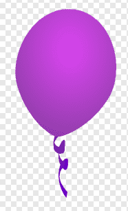
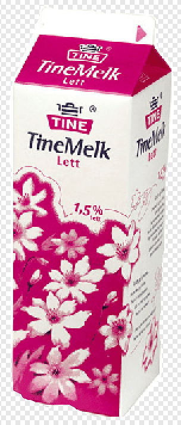
Velg så en bakgrunn som vi kan plassere figurene våre rundt i. Vi valgte
kjøkken fra biblioteket, men tegn gjerne noe eget eller finn et annet bilde du
heller har lyst til å bruke.
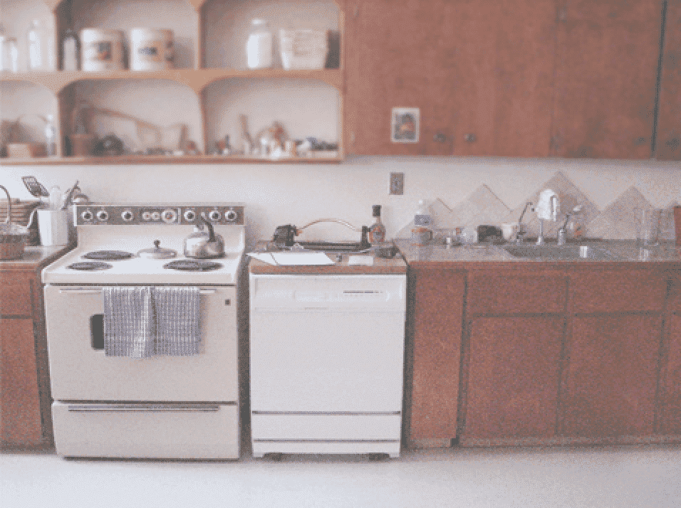
Vi kommer til å flytte rundt på søppel-figurene, så det er viktig at vi
plasserer dem på nytt hver gang vi starter spillet.
når grønt flagg klikkes
gå til x: (78) y: (5)
Søppel-figurene må ha hver sin plass, så det er viktig at du finner noen x- og
y-koordinater for hver av dem.
Test prosjektet
Om du flytter rundt på søppel-bitene, blir de satt tilbake når du trykker
på det grønne flagget?
Steg 2: Sett opp spillet
Ronny trenger å vite hvor mange søppel-figurer som er på brettet. For å finne ut av
det, så ber vi om hjelp fra søppel-figurene selv.
Sjekkliste
Ronny kan kommunisere med søppelet ved hjelp av meldinger. Start med å sende meldingen
Forbered spill.
når grønt flagg klikkes
sett [Mål v] til [0]
sett [Poeng v] til [0]
send melding [Forbered spill v]
Hver av søppel-bitene må nå svare på beskjeden ved å øke Mål med en.
når jeg mottar [Forbered spill v]
endre [Mål v] med (1)
Før spillet kan starte må vi gi Ronny litt tid til å kommunisere
og la søppelet telle opp målet vi skal nå. En ting vi kan gjøre er å la
Ronny snakke litt. Når Ronny er ferdig med å prate, så kan vi starte
spillet.
når grønt flagg klikkes
sett [Mål v] til [0]
sett [Poeng v] til [0]
send melding [Forbered spill v]
si [Hei, jeg heter Ronny, kan du hjelpe meg med å redde verden?] i (3) sekunder
send melding [Start spill v]
si [Vi må sortere avfallet til hver sin kilde, kan du hjelpe meg med det?] i (3) sekunder
Test prosjektet
Klikk på det grønne flagget.
Blir mål satt til riktig antall søppel-biter? I vårt tilfelle skal det bli seks.
Snakker Ronny?
Utfordring
Ronny har flere drakter som viser han blid og sur. Klarer du å bytte drakt på Ronny når han snakker,
og tilbake når han er ferdig med å snakke?
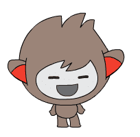
Istedenfor snakkebobler, klarer du spille inn din egen stemme?
Hint: Bruk blokken under.
spill lyden [opptak 1 v] til den er ferdig
Steg 3: Start spillet
Nå som vi vet antall poeng vi skal nå, kan vi sette opp bøttene våre.
Sjekkliste
Tegn en ny figur for hver av bøttene Mat, Plast og Papir.
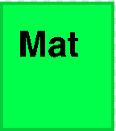
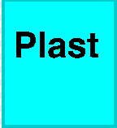
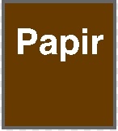
Vi ønsker ikke å vise bøttene før spillet er i gang. For å få til dette kan vi
benytte oss av Start spill-meldingen.
når grønt flagg klikkes
skjul
når jeg mottar [Start spill v]
vis
Dette trikset kan vi også gjøre for søppelet, som også er greit å skjule før
spillet er i gang.
når grønt flagg klikkes
skjul
gå til x: (78) y: (5)
når jeg mottar [Start spill v]
vis
Test prosjektet
Klikk på det grønne flagget.
Skjules bøttene i starten? Blir de vist når Ronny er ferdig å snakke?
Skjer det samme med søppel-bitene?
Steg 4: Sortering
Nå må vi få til poeng-giving når vi flytter søppel-bitene opp i bøttene.
Sjekkliste
Måten vi flytter på søppel-bitene er at vi lar dem bevege seg etter musepekeren
til de er flyttet til sin passende bøtte.
når denne figuren klikkes
gjenta til <berører [Mat v] ?>
gå til [musepeker v]
slutt
Når søppelet er lagt i sin passende bøtte, trenger vi å legge til ett poeng og skjule
søppelet.
når denne figuren klikkes
gjenta til <berører [Mat v] ?>
gå til [musepeker v]
slutt
endre [Poeng v] med (1)
skjul
Test prosjektet
Klikk på det grønne flagget.
Når du trykker på en søppel-bit, følger den etter musepekeren? Forsvinner søppelbiten
når den går i den riktige bøtten? Husk at ikke alt skal i Mat, noe skal også
i Plast eller Papir.
Utfordring
Klarer du å avslutte flyttinga hvis du flytter søppelet til feil bøtte? Kanskje til og
med få Ronny sur hvis feil bøtte brukes?
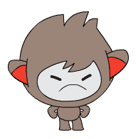
Steg 5: Avslutt spillet
Når vi har fått alt søppelet på plass, må vi avslutte spillet.
Sjekkliste
Ronny trenger å vite når spillet er over. Det kan vi gjøre ved å legge til
vent til-blokk i skriptet hans.
når grønt flagg klikkes
sett [Mål v] til [0]
sett [Poeng v] til [0]
send melding [Forbered spill v]
si [Hei, jeg heter Ronny, kan du hjelpe meg med å redde verden?] i (3) sekunder
send melding [Start spill v]
vent til <(Poeng) = (Mål)>
send melding [Spill ferdig v]
si [Takk for at du hjelper meg med å redde verden!]
I tillegg til at Ronny takker oss for at vi kildesorterte alt avfallet, så ber vi han også
sende meldingen Spill ferdig. Dette gjør at vi kan fortelle de andre figurene at spillet
er ferdig.
Da kan vi for eksempel fortelle bøttene at de skal skjule seg selv når spillet er ferdig.
når jeg mottar [Spill ferdig v]
skjul
Til slutt kan vi forandre bakgrunnen når spillet avsluttes, for å gjøre avslutningen enda
litt finere. Trykk på Scene og legg til en bakgrunn.
Vi valgte water and rocks fra biblioteket, men det er bare å velge noe du syns er finere,
evt lage noe selv.
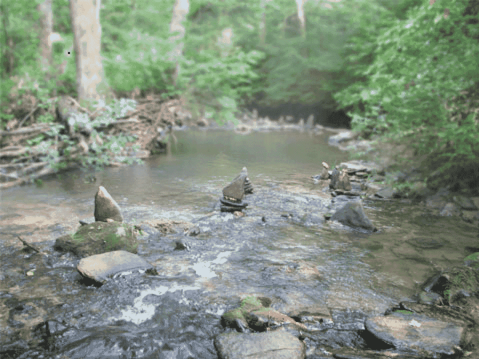
Til slutt trenger vi å fortelle når bakgrunnen skal skiftes. Du kan gjøre det ved å legge
til følgende på skriptet til Scene.
når jeg mottar [Spill ferdig v]
bytt bakgrunn til [water and rocks v]
Test prosjektet
Klikk på det grønne flagget.
Når alt søppelet er sortert, blir bakgrunnen byttet og Ronny takker for hjelpen?
Utfordring
Klarer du å sette en tredje bakgrunn når det grønne flagget klikkes? Husk at vi
vil fortsatt ha kjøkkenbakgrunn når søppel-figurene skal flyttes.
Klarer du å forandre draken til Ronny for å vise hvor glad han blir når
du har reddet verden?
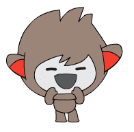
Hva har vi lært?
I dette spillet har vi lært hvordan vi kan bruke meldinger til å bryte opp spillet i
mange små biter. Mindre biter gjør programmet vårt mindre usikkert, og lettere å få
oversikt over hvis noe går galt.
I tillegg lærte vi å dele ansvaret på flere figurer. Ronny hadde ansvaret for å holde
oversikt på poengene, men fikk hjelp av søppel-figurene til å finne ut hvor mange
søppel-biter som fantes. Dette er også et viktig prinsipp i programmering, nemlig fordeling
av ansvar.
Forbedre denne siden
Funnet en feil? Kunne noe vært bedre? Hvis ja, vennligst gi oss tilbakemelding ved å lage en sak på Github eller fiks feilen selv om du kan. Vi er takknemlige for enhver tilbakemelding!

 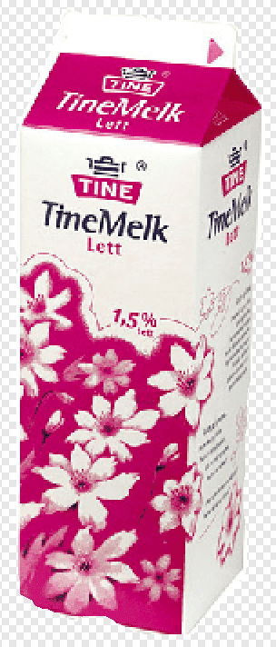
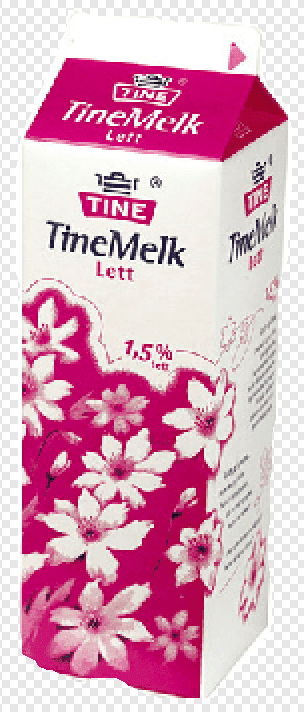